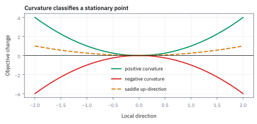
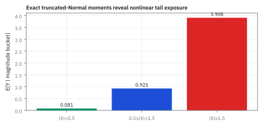

8.3 The Hessian and Second-Order Conditions
ใช้ความโค้งตรวจว่าจุดนิ่งเป็นหลุมหรือยอด
optimizer ของหุ้น (คาดหวัง 12% ผันผวน 20%) กับพันธบัตร (6%, 10%) correlation 0.30 ความกลัวความเสี่ยง γ = 2 คืนน้ำหนักหุ้น 57.7% พันธบัตร 115.4% ตรงนั้นความชันเป็นศูนย์ มันคือพอร์ตที่ดีที่สุดหรือแย่ที่สุด?
เฉลย: ดีที่สุดจริงและดีที่สุดทั้งแผนที่ เพราะความโค้ง H = −4V ลบทุกทิศทุกจุด ได้ผลตอบแทน 13.85% ความผันผวน 18.61% ค่าเป้าหมาย 0.0692 แต่ถ้าใส่ γ = −2 จุดความชันศูนย์ที่ตำแหน่งกลับเครื่องหมายกลายเป็นจุดแย่ที่สุด และ model จะสั่งกู้ไม่จำกัด ความชันศูนย์อย่างเดียวแยกสองกรณีนี้ไม่ออก Hessian แยกได้
Hessian คือ matrix ของความโค้งอันดับสอง second-order condition ใช้ตรวจว่าจุดที่ gradient ศูนย์เป็นหลุม ยอด หรือ saddle point
ศัพท์ที่ใช้ในหัวข้อนี้
- Hessian
- matrix ของ second partial derivatives ใช้วัดความโค้งของ objective ทุกทิศรอบจุดหนึ่ง
- stationary point
- จุดที่ gradient เป็นศูนย์ ใช้สร้างรายชื่อผู้สมัครก่อนตรวจว่าคือ minimum maximum หรือ saddle
- saddle point
- จุดที่พื้นผิวโค้งขึ้นบางทิศและโค้งลงบางทิศ ใช้เตือนว่า first-order condition อย่างเดียวไม่พอ
- positive definite
- matrix ที่ quadratic form เป็นบวกทุกทิศที่ไม่เป็นศูนย์ ใช้รับรอง local minimum แบบเข้ม
- negative definite
- matrix ที่ quadratic form เป็นลบทุกทิศที่ไม่เป็นศูนย์ ใช้รับรอง local maximum แบบเข้ม
- eigenvalue
- ตัวเลขความโค้งตาม eigen-direction ของ matrix ใช้ตรวจว่ามีทิศบวกหรือลบปะปนกันหรือไม่
- mean-variance
- กรอบที่ให้รางวัล expected return และหัก penalty จาก variance ใช้สร้าง objective สำหรับเลือกพอร์ต
- leverage
- การลงทุนเกินทุนของตัวเองด้วยเงินกู้ เช่นน้ำหนักรวม 173% ใช้บอกว่าพอร์ตขยายทั้งกำไรและขาดทุนกี่เท่า
- Cramer's rule
- สูตรแก้ระบบสมการเชิงเส้นด้วย determinant ใช้แก้ระบบสองสมการด้วยมือโดยไม่ต้องหา inverse
สัญลักษณ์ที่ใช้ในหัวข้อนี้
| สัญลักษณ์ | ความหมาย | หน่วย |
|---|---|---|
| $H(x)$ | Hessian ของ objective ที่ $x$ | หน่วย objective ต่อหน่วยตัวแปรกำลังสอง |
| $D_1,D_2$ | leading principal minors ของ Hessian สองมิติ | ตาม entries และ determinant ของ $H$ |
| $\lambda_1,\lambda_2$ | eigenvalue ของ Hessian | curvature unit |
| $z$ | การขยับเล็กจาก stationary point | เหมือน decision vector |
| $V$ | annual covariance matrix | (decimal return)² ต่อปี |
| $\mu$ | ผลตอบแทนคาดหวังรายปีของหุ้นและพันธบัตร | decimal return ต่อปี |
| $\gamma$ | risk-aversion coefficient ใน objective | ต่อหน่วย variance |
| $J(x)$ | objective แบบ mean-variance ที่ต้องการทำให้สูงสุด | decimal return ต่อปี |
| $x$ | น้ำหนักหุ้นและพันธบัตร ไม่บังคับให้รวมเป็นหนึ่ง | สัดส่วนของทุน |
ที่มาที่ไป: ความชันเป็นศูนย์ ยังบอกไม่ได้ว่าเป็นหลุมหรือยอด
ในปี 1842 Otto Hesse นักคณิตศาสตร์ชาวเยอรมัน ได้ริเริ่มการใช้ matrix ของ second partial derivatives เพื่อศึกษาคุณสมบัติทางเรขาคณิตของเส้นโค้งและพื้นผิวกำลังสาม ต่อมาในปี 1853 James Joseph Sylvester ได้ตั้งชื่อ matrix นี้ว่า Hessian เพื่อเป็นเกียรติแก่ Hesse พร้อมทั้งคิดค้น Sylvester's criterion สำหรับตรวจ leading principal minors
ในหนึ่งมิติ การแยกยอดเขาออกจากก้นหลุมทำได้ง่ายด้วย second derivative เพียงค่าเดียว แต่ในระบบหลายมิติ พื้นผิวอาจโค้งขึ้นตามทิศทางหนึ่งและโค้งลงตามอีกทิศทางหนึ่งพร้อมกัน เกิดเป็น saddle point Hessian จึงเป็นเครื่องมือชี้ขาดว่า stationary point ที่ค้นพบนั้นเป็นจุดต่ำสุดเฉพาะถิ่น ยอดเขา หรือจุดอานม้า
ก่อนหน้า Hesse นักคณิตศาสตร์ต้องหมุนแกนพิกัดทีละแกน หรือทดสอบความชันทีละทิศ ซึ่งยุ่งยากและไม่มีแบบแผน Hesse รวม derivative อันดับสองทั้งหมดมาเรียงเป็นตารางสี่เหลี่ยมสมมาตร การจำแนกจุดจึงลดรูปลงเหลือการตรวจ determinant หรือ eigenvalue ของตารางเดียว
โจทย์สองข้อ: พื้นผิวทดสอบ กับพอร์ตที่ไม่บังคับงบประมาณ
ข้อแรกเป็นพื้นผิวทดสอบที่คิดมือได้ $f=x_1^2+3x_1x_2+x_2^3$ มีจุดราบ 2 จุด จุดหนึ่งเป็นก้นชาม อีกจุดเป็นอานม้า และพจน์กำลังสามทำให้ความโค้งเปลี่ยนตามตำแหน่ง
ข้อสองคือพอร์ตหุ้นกับพันธบัตร ผลตอบแทนคาดหวัง 12% กับ 6% ผันผวน 20% กับ 10% correlation 0.30 objective คือผลตอบแทนคาดหวังหักค่าปรับความเสี่ยง γ = 2 ข้อนี้ไม่บังคับให้น้ำหนักรวมเป็นหนึ่ง จึงเป็นโจทย์ไร้ข้อจำกัดล้วน ๆ
ขั้นที่ 1 — นิยามของ Hessian: ความชันของความชัน
บรรทัดนี้เป็นนิยาม เอา derivative อันดับสองของทุกคู่ตัวแปรมาเรียงเป็นตาราง ในสองมิติมีสี่ช่อง
ช่องทแยงคือความโค้งตามแกน ช่องนอกทแยงคือความโค้งไขว้ ถ้า derivative อันดับสองต่อเนื่อง ลำดับการหาไม่มีผล สองช่องนอกทแยงจึงเท่ากัน Hessian สมมาตรเสมอ ผลพลอยได้คือ eigenvalue เป็นจำนวนจริงทั้งหมด คำถามว่าโค้งขึ้นหรือลงจึงตอบได้ด้วยตัวเลขจริงเสมอ
ขั้นที่ 2 — ที่มาของรูปประมาณกำลังสองจาก Taylor Expansion มิติเดียว
เจ็ดบรรทัดนี้สร้างสะพานเชื่อมระหว่าง Taylor series มิติเดียวกับ Hessian หลายมิติ โดยใช้วิธีมองการขยับไปในทิศทาง $z$ เป็น function หนึ่งมิติของตัวแปร $t$ ทำให้เห็นที่มาของตัวคูณหนึ่งส่วนสองและความสมมาตรของ quadratic form อย่างชัดเจน
ถ้ามองการเดินจาก $x$ ไป $x+z$ เป็นการเคลื่อนที่ตามตัวแปร scalar $t$ เราสามารถยุบปัญหาหลายมิติลงมาเป็น function ตัวแปรเดียว $g(t)$ เพื่อดึง Taylor series พื้นฐานมาใช้งานได้ทันที
เมื่อใช้ chain rule หา derivative เทียบกับ $t$ การเปลี่ยนแปลงอันดับหนึ่งให้ gradient ดอทกับทิศทาง $z$ ส่วนการหา derivative ครั้งที่สองจะดึง derivative ย่อยอันดับสองของทุกคู่ตัวแปรออกมาพร้อมกัน กลายเป็น quadratic form $z^{\mathsf T}Hz$
ตัวคูณ $\frac{1}{2}$ หน้าพจน์กำลังสองจึงไม่ได้ถูกเสกขึ้นมา แต่เป็นตัวคูณตามธรรมชาติจาก Taylor expansion เมื่อจุดตั้งต้นเป็น stationary point พจน์เชิงเส้นจะหายไป เหลือเพียงความโค้งของ Hessian เป็นตัวชี้ขาดทิศทาง
ขั้นที่ 3 — เกณฑ์สองมิติที่ใช้ด้วยมือ
ในสองมิติมีเกณฑ์สั้น ๆ ที่ตรวจด้วยมือได้ ไม่ต้องหา eigenvalue ให้เสียเวลา
ตั้งสมการของ eigenvalue ของ matrix สองคูณสอง ที่มี a, c บนทแยงและ b นอกทแยง ผลคูณของรากเท่ากับ determinant ac − b² เสมอ และผลบวกเท่ากับ trace a + c สองสมการนี้คือวิธีตรวจตัวเลข eigenvalue ที่เร็วที่สุดด้วย
ถ้า determinant ติดลบ eigenvalue มีเครื่องหมายตรงข้ามกัน เกิดเป็น saddle point ทันที ถ้าเป็นบวก ทั้งคู่มีเครื่องหมายเดียวกัน แล้วดูว่าเป็นชามหงายหรือคว่ำจากเครื่องหมายของ a
ขั้นที่ 4 — พิสูจน์เกณฑ์สองมิติด้วยการจัดรูปกำลังสองสมบูรณ์
การจัดรูปกำลังสองสมบูรณ์แสดงให้เห็นว่าทำไม determinant ของ matrix สองมิติจึงเป็นตัวตัดสินเครื่องหมาย หาก determinant เป็นบวก พจน์กำลังสองทั้งสองจะไปในทิศทางเดียวกัน แต่ถ้า determinant ติดลบ ไม่ว่าจะพยายามหลบอย่างไร ก็จะมีทิศทางหนึ่งที่โค้งลงเสมอ
เกณฑ์ตรวจ minor ในมิติสองมีรากฐานมาจากการจัดรูปกำลังสองสมบูรณ์ธรรมดา เพื่อแยกทิศทางอิสระสองทิศออกมาให้เห็นเครื่องหมายชัดเจน ตัวคูณสองตัวที่เหลือคือ D₁ และ D₂/D₁
เมื่อ $a>0$ และ $ac-b^2>0$ ตัวคูณหน้าวงเล็บกำลังสองทั้งสองพจน์จะเป็นบวกอย่างแท้จริง ผลรวมจึงเป็นบวกเสมอสำหรับทุกการขยับที่ไม่เป็นศูนย์ ส่งผลให้ matrix เป็น positive definite และจุดนั้นเป็นก้นหลุม
แต่ถ้า $ac-b^2 \lt 0$ พจน์ทั้งสองจะมีเครื่องหมายตรงข้ามกัน หากเดินตามแนว $z_2=0$ ความโค้งจะคุมด้วย $a$ ขณะที่ถ้าเดินตามแนว $z_1+\frac{b}{a}z_2=0$ ความโค้งจะพลิกเป็นลบ กลายเป็น saddle point ทันที
ขั้นที่ 5 — พื้นผิวทดสอบและ stationary points
ลองกับพื้นผิวของโจทย์ข้อแรก หา partial derivative ทีละตัวโดยตรึงตัวที่เหลือ แล้วตั้งให้เป็นศูนย์พร้อมกัน
สมการแรกเป็นเส้นตรง จึงดึง x₁ = −1.5x₂ ออกมาก่อน แทนลงในสมการที่สองได้สมการกำลังสองที่ดึง x₂ ออกร่วมได้ รากมีสองตัว จุดราบจึงมี 2 จุด ตรวจกลับที่ B: 2(−2.25) + 3(1.5) = 0 และ 3(−2.25) + 3(2.25) = 0
ได้ 2 จุดเพราะมีพจน์ x₂² หลังแทนค่า function ที่มีพจน์กำลังสามขึ้นไปมักมีจุดราบหลายจุด และเกือบทุกครั้งมีอย่างน้อย 1 จุดที่เป็นอานม้า ส่วนโจทย์พอร์ตข้อสองเป็นกำลังสองล้วน ระบบจึงเป็นเส้นตรงและมีคำตอบเดียว
ขั้นที่ 6 — Hessian เปลี่ยนตามตำแหน่ง และจุด A เป็นอานม้า
จุดสำคัญที่คนพลาดคือความโค้งไม่ได้คงที่ทั้งพื้นผิว ช่องขวาล่างมี x₂ อยู่ ต้องแทนแต่ละจุดแยกกัน
D₂ ติดลบ จุด A จึงเป็นอานม้า eigenvalue ยืนยันด้วยค่าบวกหนึ่งตัว ลบหนึ่งตัว และผลคูณกับผลบวกตรงกับ det กับ trace ตามขั้นที่ 3
ก้อน u กับ v ตรวจด้วยมือโดยไม่ใช้ทฤษฎีเลย เดินออกจาก (0, 0) ระยะ 0.1 ทิศหนึ่งขึ้นเป็น +0.010 อีกทิศลงเป็น −0.021 ขึ้นได้และลงได้จากจุดเดียวกัน จึงไม่ใช่ทั้งต่ำสุดและสูงสุด
ขั้นที่ 7 — จุด B เป็นก้นชามเฉพาะถิ่น
แทน x₂ = 1.5 ช่องขวาล่างเป็น 6(1.5) = 9 แล้วตรวจสองวิธี และจัดกำลังสองสมบูรณ์ด้วยตัวเลขจริงให้เห็นว่าสองวิธีตอบคำถามเดียวกัน
minor บวกทั้งสอง eigenvalue บวกทั้งคู่ และความโค้งในทิศใด ๆ (a, b) เป็นผลรวมของกำลังสองที่ตัวคูณ 2 = D₁ กับ 4.5 = D₂/D₁ เป็นบวก จึงบวกทุกทิศ minor test คือการจัดกำลังสองทีละตัวแปร ส่วน eigenvalue test คือการหมุนแกนก่อนแล้วดูตัวคูณ ถ้าสองวิธีขัดกันแปลว่าคิดเลขผิด
eigenvalue คู่นี้บวกแท้ ไม่ใช่แค่ไม่ติดลบ จุด B จึงเป็น positive definite เต็มขั้น semidefinite เป็นเงื่อนไขจำเป็นของจุดต่ำสุด ส่วน definite เป็นเงื่อนไขเพียงพอ ถ้ามี eigenvalue เป็นศูนย์พอดี Hessian บอกอะไรไม่ได้เลย เช่น x³ ที่ x = 0 มีความโค้งศูนย์แต่ไม่ใช่จุดต่ำสุด
ขั้นที่ 8 — local ไม่ได้แปลว่ามีขอบล่าง
คำเตือนที่สำคัญที่สุดของโจทย์ข้อแรก ก้นหลุมเฉพาะถิ่นไม่ได้แปลว่าต่ำสุดของทั้งพื้นผิว และบางพื้นผิวก็ไม่มีจุดต่ำสุดเลย
ทดสอบแทนค่าตัวเลขที่ห่างออกไป พจน์กำลังสาม $x_2^3$ จะมีอิทธิพลเหนือพจน์กำลังสองทั้งหมด ความโค้ง 6x₂ กลับเครื่องหมายเมื่อ x₂ ติดลบ ที่ x₂ = −100 เป็น −600 โค้งลงรุนแรง
H(B) บอกว่ารอบ ๆ จุดนี้เป็นชาม ซึ่งจริง แต่ดูแค่รัศมีเล็ก ๆ ไม่มีทางรู้ว่าไกลออกไปมีเหว จะเชื่อได้ว่า local เท่ากับ global ต้องให้ Hessian ไม่ติดลบทุกจุด ไม่ใช่แค่ที่จุดราบ ตรวจง่ายที่สุดเมื่อ H คงที่ ซึ่งเป็นกรณีของโจทย์พอร์ตพอดี
ขั้นที่ 9 — Mean-variance มีความโค้งคงที่
กลับมาที่ปัญหาพอร์ต ซึ่งโชคดีตรงที่ความโค้งคงที่ทุกจุด สูตรข้างล่างแสดงว่าความโชคดีนั้นมาจากไหน คือ objective มีกำลังสูงสุดแค่สอง หา derivative สองครั้งแล้วตัวแปรก็หายหมด ต่างจากตัวอย่าง cubic ในขั้นที่ 8 อย่างสิ้นเชิง
objective ของพอร์ตคือผลตอบแทนคาดหวังหักค่าปรับความเสี่ยง หา derivative ทีละพจน์ พจน์เชิงเส้นมีความชันคงที่เท่ากับตัวคูณของมันเอง ส่วนพจน์กำลังสองให้ $2Vx$ ซึ่งเป็นรูปหลายมิติของ $\frac{d}{dx}(ax^{2})=2ax$ เลข 2 โผล่มาได้เพราะ V สมมาตร ตามที่หัวข้อ 8.2 พิสูจน์ไว้
พอหา derivative อีกครั้ง x หายไปหมด เหลือแต่ค่าคงที่ ความโค้งไม่ขึ้นกับตำแหน่งเลย ตรวจครั้งเดียวจึงใช้ได้ทั้งพื้นผิว และ μ ไม่มีผลกับ Hessian เลยเพราะอยู่ในพจน์เชิงเส้น
ขั้นที่ 10 — โจทย์เปิดเรื่อง: กาง J ด้วยตัวเลขแล้วตั้งความชันเป็นศูนย์
ของที่โจทย์ให้: μ = (0.12, 0.06) γ = 2 และ V เดียวกับหัวข้อ 8.1 คูณ 2 เข้าไปในพจน์ความเสี่ยง แล้วหา partial derivative ทีละตัว ทุกอย่างหลังจากนี้คิดจากบรรทัดเดียว
ตัวคูณ 0.16, 0.024, 0.04 คือ 2γV = 4V พอดี สมการแรกอ่านเป็นภาษาโต๊ะเทรดได้ว่า ต้นทุนความเสี่ยงส่วนเพิ่มของหุ้นเท่ากับผลตอบแทนส่วนเพิ่มของมัน จุดที่ดีที่สุดคือจุดที่สองอย่างนี้เท่ากันทุกสินทรัพย์พร้อมกัน
พจน์ 0.024x₂ ในสมการของหุ้นมาจาก covariance ต้นทุนความเสี่ยงของหุ้นจึงขึ้นกับว่าถือพันธบัตรอยู่เท่าไรด้วย นี่คือเหตุผลที่จัดพอร์ตทีละตัวไม่ได้ ต้องแก้พร้อมกันทั้งระบบ
ขั้นที่ 11 — แก้ระบบด้วย Cramer's rule: 57.7% กับ 115.4%
ตัวส่วนของทุกอย่างคือ determinant ของตารางตัวคูณ แล้วแทนหลักทีละหลักด้วยฝั่งขวา
แทนกลับในสมการที่สองได้ 0.06 พอดี น้ำหนักรวม 173% ของทุน แปลว่า model แนะนำให้กู้มาลงทุนเพิ่ม 73% เพราะข้อนี้ไม่บังคับงบประมาณ มันตอบแค่ว่าที่ความกลัว γ = 2 ควรถือความเสี่ยงมากแค่ไหนในเชิงสัมบูรณ์
γ เป็นสวิตช์ขนาด ไม่ใช่สวิตช์ทิศ เพราะคำตอบคือ (1/2γ)V⁻¹μ ใส่ γ = 4 ได้น้ำหนักครึ่งหนึ่งพอดี 28.8% กับ 57.7% หน้าตาพอร์ตเหมือนเดิม ถ้าอยากเปลี่ยนองค์ประกอบของพอร์ตต้องแก้ μ หรือ V ไม่ใช่แก้ γ
ขั้นที่ 12 — Hessian = −4V: ยอดโดมใบเดียวทั้งพื้นผิว
หา derivative อันดับสองจากขั้นที่ 10 แล้วตรวจสองวิธี ใช้ λ เป็น eigenvalue ส่วนความกลัวความเสี่ยงคือ γ
D₁ ลบและ D₂ บวก คือเกณฑ์ของยอดโดมในขั้นที่ 3 eigenvalue ลบทั้งคู่ และการจัดกำลังสองได้ลบทั้งสองก้อน สามวิธีตรงกัน H ไม่มี x เหลืออยู่ จึงเป็นโดมทุกจุด จุดในขั้นที่ 11 คือค่าสูงสุดของทั้งพื้นผิว ไม่ใช่แค่เฉพาะถิ่น
0.005824 คือตัวส่วนเดียวกับ Cramer's rule เพราะ determinant ตัวเดียวกันบอกทั้งว่ามีคำตอบเดียวและว่าคำตอบนั้นเป็นอะไร
eigenvalue คือ −4 คูณ eigenvalue ของ V ซึ่งเป็น variance ของพอร์ตสองทิศธรรมชาติ ความผันผวน 9.40% กับ 20.29% ความเว้าของ objective จึงเท่ากับความเป็นบวกของความเสี่ยงคูณความเกลียดความเสี่ยง ตัวใดตัวหนึ่งพัง คำตอบพังทันที
ขั้นที่ 13 — อ่านคำตอบเป็นพอร์ตจริง และราคาของการห้ามกู้
คิดผลตอบแทน ความเสี่ยง และค่าเป้าหมายที่จุดสูงสุด แล้วเทียบกับพอร์ตที่บังคับงบประมาณ 50/50 ของหัวข้อ 8.5
พอร์ตไร้ข้อจำกัดได้ผลตอบแทน 13.85% ความผันผวน 18.61% ทางลัดตรวจตัวเลข: ที่จุดสูงสุด ค่าปรับความเสี่ยงเท่ากับครึ่งหนึ่งของผลตอบแทนเสมอ เพราะเอา x คูณเงื่อนไขความชันศูนย์ทั้งสองข้าง จึงได้ 0.069231 ตรงกัน
พอบังคับให้น้ำหนักรวมเป็นหนึ่ง ได้ 50/50 ค่าเป้าหมาย 0.0590 ส่วนต่าง 0.0102 คือราคาของการห้ามกู้ ทุกข้อจำกัดที่เพิ่มเข้าไปกดค่าเป้าหมายลงเสมอ ตัวเลขแบบนี้คือสิ่งที่ควรเอาไปคุยกับฝ่ายกำกับ กฎข้อนี้มีต้นทุนเท่าไร
ขั้นที่ 14 — ถ้า γ = −2 นักลงทุนชอบความเสี่ยง จุดเดิมกลายเป็นแย่ที่สุด
ใส่ γ = −2 แล้ว Hessian กลับเครื่องหมายทั้งตาราง ลองเดินไปทางหุ้นล้วน x = (t, 0) ดูว่าค่าเป้าหมายไปทางไหน
H = +4V เป็นชามหงาย การหาค่าสูงสุดบนชามหงายไม่มีคำตอบภายใน ยิ่งอัด leverage ค่าเป้าหมายยิ่งดีขึ้นไม่มีที่หยุด คำแนะนำของ model คือกู้ไม่จำกัดไปทุ่มในสินทรัพย์ที่ผันผวนที่สุด
จุดความชันศูนย์ยังอยู่ แค่กลับเครื่องหมาย และกลายเป็นจุดแย่ที่สุดที่ −0.0692 นี่คือเหตุผลจริงที่ทฤษฎีพอร์ตต้องสมมติว่านักลงทุนเกลียดความเสี่ยง ไม่ใช่เพราะฟังดูสุภาพ แต่เพราะถ้าไม่สมมติ ปัญหาไม่มีคำตอบเลย และเงื่อนไขอันดับหนึ่งอย่างเดียวไม่มีทางรู้ว่าเพิ่งเจออะไร
แล้วเอาไปใช้ทำอะไรได้จริงบ้าง
ความโค้งบอกว่าจุดที่พื้นราบนั้นเป็นหลุมหรือยอด ซึ่งเปลี่ยนคำตอบไปคนละทาง
ทุกครั้งที่ optimizer คืนคำตอบ ให้ถามว่ามันหยุดบนอานม้าหรือเปล่า ดู eigenvalue ต่ำสุดของ Hessian ถ้าผิดเครื่องหมาย ยังมีทิศที่ปรับพอร์ตแล้วดีขึ้นได้อีก และทิศนั้นอ่านได้จาก eigenvector ของมัน วิธีที่ถูกที่สุดคือสุ่มทิศ 20 ทิศรอบคำตอบ เดินไปนิดเดียว ถ้ามีทิศไหนดีขึ้น คุณเพิ่งจับ saddle point ได้โดยไม่ต้องแตะพีชคณิต
ใช้ตรวจว่าตารางความเสี่ยงที่ประมาณมานั้นสมเหตุสมผล ถ้า eigenvalue ต่ำสุดของ V ติดลบ ซึ่งเกิดบ่อยเมื่อจำนวนสินทรัพย์มากกว่าจำนวนวันข้อมูล optimizer จะวิ่งหาพอร์ตที่ความเสี่ยงติดลบ อาการบนจอคือน้ำหนักหลักพันเปอร์เซ็นต์ที่หักล้างกันเป็นคู่
ใช้เร่งการหาคำตอบ เพราะวิธีที่ใช้ความโค้งด้วยเดินถึงคำตอบเร็วกว่าวิธีที่ใช้แค่ความชันมาก
Figure 8.3a — ชาม โดม และอานม้า

สามเส้นตัดหนึ่งมิติแสดงเครื่องหมายของ curvature: บวกเป็น bowl ลบเป็น dome และ saddle มีเครื่องหมายต่างกันตามทิศ
Figure 8.3b — จุดอานม้าที่จุดกำเนิด

เส้นชั้นรอบ $A$ เปิดคนละทิศ และ Hessian มี eigenvalue บวกหนึ่งตัว ลบหนึ่งตัว การหยุดที่ gradient ศูนย์ตรงนี้จึงยังมีทางลง
Figure 8.3c — eigenvalue ตัดสินว่าเป็นชาม โดม หรืออานม้า

ที่ $A$ eigenvalues คนละเครื่องหมาย ส่วนที่ $B$ เป็นบวกทั้งคู่ จึงเห็นคำตัดสินเดียวกับ principal-minor test โดยไม่ต้องเดาทิศเดิน
Figure 8.3d — ระดับกลัวความเสี่ยงพลิกความโค้ง

เมื่อ $\gamma$ เป็นบวก mean-variance objective เป็นโดมและมีจุดสูงสุด ถ้าฝืนให้ $\gamma$ ติดลบ objective กลายเป็นชามหงายและการ maximize แบบไร้ขอบเขตวิ่งหนีไม่สิ้นสุด
คำตอบ — ดีที่สุดทั้งแผนที่ เพราะ H = −4V
คำถาม: จุดที่ความชันเป็นศูนย์ของ optimizer คือพอร์ตที่ดีที่สุดหรือแย่ที่สุด และพื้นผิวทดสอบมีจุดแบบไหนบ้าง?
ของที่มี: ขั้นที่ 5 ถึง 14
1 พื้นผิวทดสอบมีจุดราบ A = (0, 0) ซึ่ง D₂ = −9 และ eigenvalue +4.162, −2.162 เป็นอานม้า กับ B = (−2.25, 1.5) ซึ่ง D₂ = 9 และ eigenvalue 0.890, 10.110 เป็นก้นชามเฉพาะถิ่นที่ −1.6875 แต่ที่ (150, −100) ได้ −1,022,500 ไม่มีขอบล่าง
2 พอร์ตที่ γ = 2 ได้ x = (0.5769, 1.1538) รวม 173% H = −4V มี D₁ = −0.16 D₂ = 0.005824 eigenvalue −0.0354 กับ −0.1646 เป็นโดมทุกจุด จุดนี้คือค่าสูงสุดของทั้งพื้นผิว ผลตอบแทน 13.85% ความผันผวน 18.61% ค่าเป้าหมาย 0.0692
3 ที่ γ = −2 H = +4V ไม่มีค่าสูงสุด t = 1,000 ให้ 80,120 และจุดความชันศูนย์กลายเป็นจุดแย่ที่สุดที่ −0.0692
ตรวจเองใน 10 วินาที: 0.16 × 0.04 − 0.024² = 0.005824 และ 0.00336/0.005824 = 0.5769 ส่วน 2.25² − 3(2.25)(1.5) + 1.5³ = −1.6875
แปลว่าอะไร: เงื่อนไขอันดับหนึ่งหาผู้สมัคร เงื่อนไขอันดับสองตัดสิน ก่อนเชื่อผลจาก optimizer ให้ดู eigenvalue ของ V ก่อนเสมอ γ เปลี่ยนแค่ขนาดของพอร์ต ไม่เปลี่ยนทิศ และ 0.0692 กับ 0.0590 คือราคาของข้อจำกัดงบประมาณเป็นตัวเลข
โค้ดตรวจ Hessian ของพื้นผิวทดสอบและของพอร์ต
import numpy as np
f=lambda a,b: a*a+3*a*b+b**3
assert np.allclose(np.linalg.eigvalsh([[2,3],[3,0]]),[-2.1623,4.1623],atol=1e-4)
assert np.allclose(np.linalg.eigvalsh([[2,3],[3,9]]),[0.8902,10.1098],atol=1e-4)
assert abs(f(-2.25,1.5)+1.6875)<1e-12 and f(150,-100)==-1022500
assert abs(f(.1,0)-0.01)<1e-12 and abs(f(.1,-.1)+0.021)<1e-12
V=np.array([[.04,.006],[.006,.01]]); mu=np.array([.12,.06]); g=2
x=np.linalg.solve(2*g*V,mu)
assert np.allclose(x,[0.576923,1.153846],atol=1e-6) and abs(np.linalg.det(2*g*V)-0.005824)<1e-9
H=-2*g*V; assert np.allclose(np.linalg.eigvalsh(H),[-0.164622,-0.035378],atol=1e-6)
J=lambda x,g: mu@x-g*x@V@x
assert abs(J(x,2)-0.069231)<1e-6 and abs(J(np.array([.5,.5]),2)-0.059)<1e-12
assert abs(J(-x,-2)+0.069231)<1e-6 and abs(J(np.array([1000.,0]),-2)-80120)<1e-6
V1=np.array([[.04,.02],[.02,.01]]); J1=lambda x: mu@x-2*x@V1@x
assert abs(J1(np.array([.75,0]))-0.045)<1e-12 and abs(J1(np.array([-.25,2]))-0.045)<1e-12โค้ดนี้ตรวจ eigenvalue ที่ A และ B ค่า −1.6875 กับ −1,022,500 การเดินรอบ A พอร์ต 57.7%/115.4% determinant 0.005824 eigenvalue ของ −4V ค่าเป้าหมาย 0.0692 กับ 0.0590 กรณี γ = −2 และกรณี ρ = 1 ในกับดัก
กับดัก: ดู diagonal ตัวเดียวแล้วสรุป
ที่จุด A ช่อง D₁ = 2 เป็นบวก ทำให้หลายคนรีบสรุปว่าโค้งขึ้นจึงเป็นจุดต่ำสุด ผิด เพราะ D₁ ดูแค่ทิศ x₁ ทิศเดียว cross-partials สร้างทิศผสมที่ลงได้ ต้องผ่านทุกเงื่อนไข ไม่ใช่ผ่านเงื่อนไขแรกแล้วจบ และถ้า determinant เป็นศูนย์พอดี เกณฑ์นี้ตัดสินไม่ได้เลย
ถ้าประมาณ ρ ได้ 1.00 พอดี ซึ่งเกิดง่ายเมื่อข้อมูลสั้นหรือมีสินทรัพย์ซ้ำ covariance เป็น 0.20 × 0.10 = 0.02 และ det V = 0.04(0.01) − 0.02² = 0 H มี eigenvalue 0 กับ −0.2 ทิศ (1, −2) ไม่เปลี่ยนทั้งผลตอบแทนและความเสี่ยง ค่าเป้าหมายจึงคงที่ตลอดเส้น (0.75, 0) กับ (−0.25, 2) ได้ 0.045 เท่ากันเป๊ะ รันสองครั้งได้น้ำหนักคนละชุด นั่นไม่ใช่บั๊ก แต่เป็น V ที่เอกฐาน
ข้อจำกัด: วิธีนี้สมมติอะไร และของจริงเป็นอย่างไร
| เรื่อง | วิธีนี้สมมติว่า | ของจริงเป็นอย่างไร | ผลที่ตามมาเวลาใช้งาน |
|---|---|---|---|
| ต้นทุนการคำนวณ | คำนวณความโค้งได้เสมอ | จำนวนช่องโตตามกำลังสองของจำนวนตัวแปร | ปัญหาใหญ่ทำไม่ไหว ต้องใช้วิธีที่ประมาณความโค้งแทน |
| ความถูกต้อง | ความโค้งที่คำนวณได้ถูกต้อง | ความคลาดเคลื่อนของ input ถูกขยาย | การตัดสินว่าเป็นหลุมหรือยอดอาจผิดเมื่ออยู่ใกล้เส้นแบ่ง |
| กรณีก้ำกึ่ง | แยกได้ชัดทุกกรณี | เมื่อความโค้งเป็นศูนย์พอดี บอกอะไรไม่ได้เลย | ต้องดูอันดับสูงกว่านั้น ซึ่งในทางปฏิบัติมักเลี่ยงด้วยการเปลี่ยนโจทย์แทน |
แถวแรกคือเหตุผลที่การเรียนรู้ของเครื่องสมัยใหม่ใช้แค่ความชัน ไม่ใช้ความโค้ง
สรุปที่ใช้ได้จริง
- gradient ศูนย์สร้างผู้สมัคร แต่ Hessian เป็นผู้จัดประเภท
- positive-definite Hessian รับรอง strict local minimum และ mixed eigenvalue signs บอก saddle
- local minimum อาจไม่ใช่ global minimum และ objective อาจไม่มีขอบล่าง
- mean-variance ที่ $\gamma>0$ กับ positive-definite covariance ให้ objective เว้าทั้งพื้นผิว
- หุ้น 12%/20% พันธบัตร 6%/10% ρ 0.30 γ = 2: พอร์ต 57.7%/115.4% ค่าเป้าหมาย 0.0692 เป็นค่าสูงสุดของทั้งพื้นผิว ห้ามกู้แล้วเหลือ 0.0590 ส่วน γ = −2 ไม่มีคำตอบ